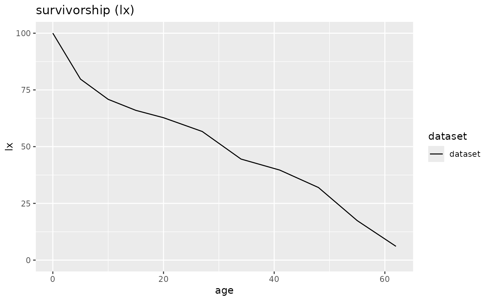

life.table calculates
life table(s).
The algorithm is optimised for deceased populations
encountered in archaeological research.
See Chamberlain 2006, 27ff., Herrmann et. al 1990, 303ff.,
Kokkotidis/Richter 1991, Keyfitz et al. 2005
for selected literature.
The function takes an individual data.frame or a list of
data.frames and returns an object of class mortaar_life_table
or mortaar_life_table_list, for which specialised summary,
print and plot functions exist.
Usage
life.table(neclist, agecor = TRUE, agecorfac = c(), option_spline = NULL)Arguments
- neclist
single data.frame or list of data.frames with the columns 'x', 'a', 'Dx'.
x: age interval identifier, optional. - Otherwise determined from a.
a: years within x.
Dx: number of deaths within x.
- agecor
logical, optional. If set TRUE, the average number of years lived within a given age class of individuals having died in this class can be adjusted via agecorfac. If set FALSE, it is assumed that they died in the middle of this class. Due to the higher mortality rates of infants, this assumption is certainly inaccurate for individuals <= 5 years.
Default setup is: TRUE.
- agecorfac
numeric vector, optional. Only applies if agecor == TRUE. Given values replace the standard values from the first age interval onward.
Default setup is 1/3 for every age class <= 5 life years, and 1/2 for the others.
- option_spline
integer, optional. If > 0, values for adults will be interpolated by a monotonic cubic spline. Usual options will by '10' or '20' which will interpolate the values for individuals of an age of 20 or older by 10- or 20- year cumulated values. To be used carefully, as diagnostic features of the life table might be smoothed and essentially removed. Only available when the methods 'Standard' or 'Equal5' in prep.life.table have been chosen.
Value
An object of class mortaar_life_table or mortaar_life_table_list. Each mortaar_life_table contains the following variables:
x: age interval.
a: years within x.
Ax: average number of years lived by an individual that died within a specific age class x :
\(A_{x} = a_{x} * agecorfac_{x}\)
Dx: number of deaths within x.
dx: proportion of deaths within x (percent) :
\(d_{x} = \frac{D_{x}}{\sum_{i=1}^{n} D_{i}} * 100\)
lx: survivorship within x (percent) :
\(l_{x+1} = l_{x} - d_{x}\) with \(l_{0} = 100\)
qx: probability of death within x (percent) :
\(q_{x} = \frac{d_{x}}{l_{x}}* 100\)
Lx: number of years lived within x by those that died within x and those that reached the next age class :
\(L_{x} = (a_{x} * l_{x}) - ((a_{x} - A_{x}) * d_{x})\)
Tx: sum of years lived within current and remaining x :
\(T_{x+1} = T_{x} - L_{x}\) with \(T_{0} = \sum_{i=1}^{n}{L_{i}}\)
ex: average years of life remaining (average life expectancy at mean(x)) :
\(e_{x} = \frac{T_{x}}{l_{x}}\)
rel_popx: percentage of L(x) of the sum of L(x) :
\(relpopx_{x} = \frac{L_{x}}{\sum_{i=1}^{n}{L_{i}}} * 100\)
References
chamberlain_demography_2006mortAAR
herrmann_prahistorische_1990mortAAR
keyfitz_applied_2005mortAAR
kokkotidis_graberfeld-_1991mortAAR
Examples
# Create a mortaar_life_table from a prepared dataset.
schleswig_1 <- life.table(schleswig_ma[c("a", "Dx")])
print(schleswig_1)
#>
#> mortAAR life table (n = 247 individuals)
#>
#> Life expectancy at birth (e0): 30.671
#>
#> x a Ax Dx dx lx qx Lx Tx ex rel_popx
#> 1 0--4 5 1.667 50 20.243 100.000 20.243 432.524 3067.139 30.671 14.102
#> 2 5--9 5 2.500 22 8.907 79.757 11.168 376.518 2634.615 33.033 12.276
#> 3 10--14 5 2.500 12 4.858 70.850 6.857 342.105 2258.097 31.871 11.154
#> 4 15--19 5 2.500 8 3.239 65.992 4.908 321.862 1915.992 29.034 10.494
#> 5 20--26 7 3.500 15 6.073 62.753 9.677 418.016 1594.130 25.403 13.629
#> 6 27--33 7 3.500 30 12.146 56.680 21.429 354.251 1176.113 20.750 11.550
#> 7 34--40 7 3.500 12 4.858 44.534 10.909 294.737 821.862 18.455 9.610
#> 8 41--47 7 3.500 19 7.692 39.676 19.388 250.810 527.126 13.286 8.177
#> 9 48--54 7 3.500 36 14.575 31.984 45.570 172.874 276.316 8.639 5.636
#> 10 55--61 7 3.500 28 11.336 17.409 65.116 82.186 103.441 5.942 2.680
#> 11 62--68 7 3.500 15 6.073 6.073 100.000 21.255 21.255 3.500 0.693
plot(schleswig_1, display = "lx")

# Create a mortaar_life_table_list from two datasets.
odagsen <- life.table(list(
"corpus mandibulae" = odagsen_cm[c("a", "Dx")],
"margo orbitalis" = odagsen_mo[c("a", "Dx")]
))
print(odagsen)
#>
#>
#> mortAAR life table for : corpus mandibulae (n = 67.2 individuals)
#>
#> Life expectancy at birth (e0): 37.888
#>
#> x a Ax Dx dx lx qx Lx Tx ex rel_popx
#> 1 0--5 6 3 4.0 5.952 100.000 5.952 582.143 3788.839 37.888 15.365
#> 2 6--11 6 3 7.5 11.161 94.048 11.867 530.804 3206.696 34.097 14.010
#> 3 12--17 6 3 2.0 2.976 82.887 3.591 488.393 2675.893 32.284 12.890
#> 4 18--25 8 4 7.1 10.565 79.911 13.222 597.024 2187.500 27.374 15.757
#> 5 26--33 8 4 7.6 11.310 69.345 16.309 509.524 1590.476 22.936 13.448
#> 6 34--41 8 4 9.6 14.286 58.036 24.615 407.143 1080.952 18.626 10.746
#> 7 42--49 8 4 9.3 13.839 43.750 31.633 294.643 673.810 15.401 7.777
#> 8 50--57 8 4 5.8 8.631 29.911 28.856 204.762 379.167 12.677 5.404
#> 9 58--65 8 4 6.8 10.119 21.280 47.552 129.762 174.405 8.196 3.425
#> 10 66--73 8 4 7.5 11.161 11.161 100.000 44.643 44.643 4.000 1.178
#>
#> mortAAR life table for : margo orbitalis (n = 74.8 individuals)
#>
#> Life expectancy at birth (e0): 34.739
#>
#> x a Ax Dx dx lx qx Lx Tx ex rel_popx
#> 1 0--5 6 3 5.5 7.353 100.000 7.353 577.941 3473.930 34.739 16.637
#> 2 6--11 6 3 4.0 5.348 92.647 5.772 539.840 2895.989 31.258 15.540
#> 3 12--17 6 3 3.0 4.011 87.299 4.594 511.765 2356.150 26.989 14.732
#> 4 18--25 8 4 10.6 14.171 83.289 17.014 609.626 1844.385 22.144 17.549
#> 5 26--33 8 4 16.6 22.193 69.118 32.108 464.171 1234.759 17.865 13.362
#> 6 34--41 8 4 8.6 11.497 46.925 24.501 329.412 770.588 16.422 9.482
#> 7 42--49 8 4 11.0 14.706 35.428 41.509 224.599 441.176 12.453 6.465
#> 8 50--57 8 4 6.0 8.021 20.722 38.710 133.690 216.578 10.452 3.848
#> 9 58--65 8 4 6.5 8.690 12.701 68.421 66.845 82.888 6.526 1.924
#> 10 66--73 8 4 3.0 4.011 4.011 100.000 16.043 16.043 4.000 0.462
plot(odagsen, display = "ex")
 # Prepare a real world dataset and create a mortaar_life_table.
library(magrittr)
magdalenenberg %>%
replace(. == "60-x", "60-70") %>%
tidyr::separate(a, c("from", "to")) %>%
dplyr::mutate(from = as.numeric(from), to = as.numeric(to)) %>%
prep.life.table(
dec = "Dx",
agebeg = "from",
ageend = "to",
method = "Standard",
agerange = "excluded"
) %>%
life.table()
#>
#> mortAAR life table (n = 111 individuals)
#>
#> Life expectancy at birth (e0): 32.202
#>
#> x a Ax Dx dx lx qx Lx Tx ex
#> 1 0--0 1 0.333 0.948 0.854 100.000 0.854 99.431 3220.201 32.202
#> 2 1--4 4 1.333 2.843 2.561 99.146 2.583 389.757 3120.770 31.476
#> 3 5--9 5 2.500 4.620 4.162 96.586 4.309 472.523 2731.014 28.276
#> 4 10--14 5 2.500 4.540 4.090 92.423 4.425 451.892 2258.491 24.436
#> 5 15--19 5 2.500 4.210 3.793 88.333 4.294 432.185 1806.599 20.452
#> 6 20--24 5 2.500 14.990 13.505 84.541 15.974 388.941 1374.414 16.257
#> 7 25--29 5 2.500 20.610 18.568 71.036 26.138 308.761 985.473 13.873
#> 8 30--34 5 2.500 17.200 15.495 52.468 29.533 223.604 676.712 12.897
#> 9 35--39 5 2.500 14.390 12.964 36.973 35.063 152.455 453.108 12.255
#> 10 40--44 5 2.500 6.680 6.018 24.009 25.066 105.000 300.653 12.523
#> 11 45--49 5 2.500 4.040 3.640 17.991 20.230 80.856 195.653 10.875
#> 12 50--54 5 2.500 5.490 4.946 14.351 34.463 59.392 114.797 7.999
#> 13 55--59 5 2.500 5.720 5.153 9.405 54.789 34.144 55.405 5.891
#> 14 60--64 5 2.500 2.360 2.126 4.252 50.000 15.946 21.261 5.000
#> 15 65--69 5 2.500 2.360 2.126 2.126 100.000 5.315 5.315 2.500
#> rel_popx
#> 1 3.088
#> 2 12.103
#> 3 14.674
#> 4 14.033
#> 5 13.421
#> 6 12.078
#> 7 9.588
#> 8 6.944
#> 9 4.734
#> 10 3.261
#> 11 2.511
#> 12 1.844
#> 13 1.060
#> 14 0.495
#> 15 0.165
# Prepare a real world dataset and create a mortaar_life_table.
library(magrittr)
magdalenenberg %>%
replace(. == "60-x", "60-70") %>%
tidyr::separate(a, c("from", "to")) %>%
dplyr::mutate(from = as.numeric(from), to = as.numeric(to)) %>%
prep.life.table(
dec = "Dx",
agebeg = "from",
ageend = "to",
method = "Standard",
agerange = "excluded"
) %>%
life.table()
#>
#> mortAAR life table (n = 111 individuals)
#>
#> Life expectancy at birth (e0): 32.202
#>
#> x a Ax Dx dx lx qx Lx Tx ex
#> 1 0--0 1 0.333 0.948 0.854 100.000 0.854 99.431 3220.201 32.202
#> 2 1--4 4 1.333 2.843 2.561 99.146 2.583 389.757 3120.770 31.476
#> 3 5--9 5 2.500 4.620 4.162 96.586 4.309 472.523 2731.014 28.276
#> 4 10--14 5 2.500 4.540 4.090 92.423 4.425 451.892 2258.491 24.436
#> 5 15--19 5 2.500 4.210 3.793 88.333 4.294 432.185 1806.599 20.452
#> 6 20--24 5 2.500 14.990 13.505 84.541 15.974 388.941 1374.414 16.257
#> 7 25--29 5 2.500 20.610 18.568 71.036 26.138 308.761 985.473 13.873
#> 8 30--34 5 2.500 17.200 15.495 52.468 29.533 223.604 676.712 12.897
#> 9 35--39 5 2.500 14.390 12.964 36.973 35.063 152.455 453.108 12.255
#> 10 40--44 5 2.500 6.680 6.018 24.009 25.066 105.000 300.653 12.523
#> 11 45--49 5 2.500 4.040 3.640 17.991 20.230 80.856 195.653 10.875
#> 12 50--54 5 2.500 5.490 4.946 14.351 34.463 59.392 114.797 7.999
#> 13 55--59 5 2.500 5.720 5.153 9.405 54.789 34.144 55.405 5.891
#> 14 60--64 5 2.500 2.360 2.126 4.252 50.000 15.946 21.261 5.000
#> 15 65--69 5 2.500 2.360 2.126 2.126 100.000 5.315 5.315 2.500
#> rel_popx
#> 1 3.088
#> 2 12.103
#> 3 14.674
#> 4 14.033
#> 5 13.421
#> 6 12.078
#> 7 9.588
#> 8 6.944
#> 9 4.734
#> 10 3.261
#> 11 2.511
#> 12 1.844
#> 13 1.060
#> 14 0.495
#> 15 0.165